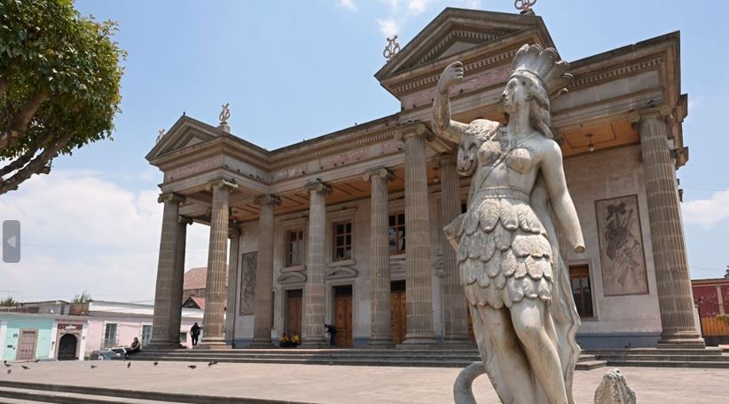

Época Precolombina: Habitada por los k'iche's, una cultura maya avanzada.
Conquista Española: Fundada el 15 de septiembre de 1524 por Pedro de Alvarado, sobre las ruinas de antiguas ciudades mayas.
Periodo Colonial: Importante centro administrativo y comercial durante la época colonial.
Independencia y Siglo XIX: Se independiza de España en 1821 y en 1838 se convierte en la capital del departamento de Quetzaltenango.
Siglo XX y XXI: Continúa creciendo como un centro cultural y educativo, conocido por sus festividades y su rica herencia cultural.

Es que el país es hogar de una de las civilizaciones más avanzadas de la América precolombina: los mayas.